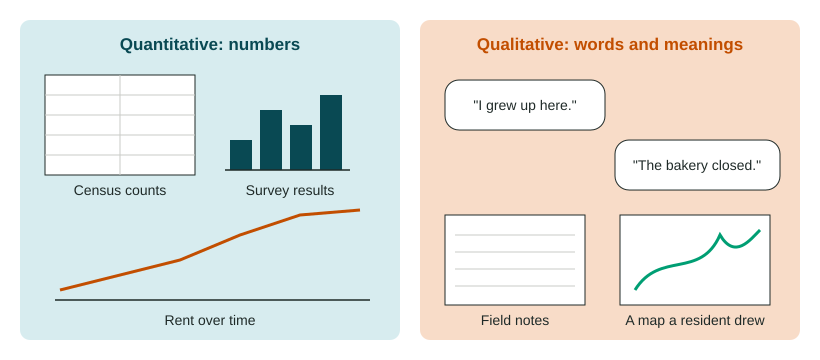

Urban Data
Urban geographers study change with quantitative data (census and survey counts of people, housing, income and travel) and qualitative data (interviews, field observation and residents' narratives).
Part 1 · Hook
Why this matters
Part 2 · Before you start
What this builds on
Part 3 · Prerequisite check
Quick check before you start
1. Which is quantitative data?
- The number of renters in each census tract
- A resident's story about her street
- Field notes describing how a park feels at night
- A drawing of a mental map
Show the answer
Quantitative data are numbers that can be counted or measured.
- Correct: The number of renters in each census tract:
- A resident's story about her street:
- Field notes describing how a park feels at night:
- A drawing of a mental map:
2. What is a census?
- An official count of a population and its traits
- A map of land use
- A poll of voters before an election
- A list of a city's laws
Show the answer
A census counts every person and records traits such as age and housing.
- Correct: An official count of a population and its traits:
- A map of land use:
- A poll of voters before an election:
- A list of a city's laws:
Part 4 · See it
See it first

Part 5 · Step by step
How it works, step by step
- A census or survey counts people, homes, rents and incomes in small areasplanners can see what changed and by how much in each neighborhood
- Numbers show what changed but not why or what it means to residentsresearchers add interviews, field observation and residents' stories
- Qualitative data come from a small number of peoplethey show meaning and causes but cannot show how common a view is
- Both kinds of data are combineda city can make decisions that fit both the trends and the people living through them
Part 6 · Key ideas
Key ideas
- Quantitative data on cities come from censuses and surveys: population, age, income, rent, how people travel to work. Survey data come from asking a sample of people a fixed set of questions.
- In the United States, the census counts everyone every 10 years (most recently in 2020); the American Community Survey asks a sample of households each year, so its figures are estimates with a margin of error.
- Qualitative data on cities come from interviews, field studies, photos, mental maps and residents' stories. They show attitudes and reasons.
- Every source has limits: numbers miss meaning; a few interviews may not represent everyone; data for a whole city can hide differences between its neighborhoods.
Part 7 · Misconception
A common mistake
The wrong idea: Numbers are objective, so census data are always better than interviews.
What actually happens: Each kind answers different questions. A census can show that rents rose 80% in a tract; only interviews and field work can show why people left, how they feel about it or what the neighborhood meant to them. Strong studies use both.
Part 8 · Check yourself
Check yourself
Exam-style questions. Anything you miss goes into your review queue.
Data
Census and survey figures for the East Ridge neighborhood
| Measure | 2000 | 2010 | 2020 |
|---|---|---|---|
| Population | 4,200 | 4,000 | 4,300 |
| Median household income (dollars a year) | 31,000 | 38,000 | 72,000 |
| Median monthly rent (dollars) | 650 | 800 | 1,450 |
| Share of homes rented, not owned | 78% | 74% | 58% |
| Share of residents who moved in during the last 5 years | 20% | 24% | 46% |
Invented data for practice.
1. Which trend from 2000 to 2020 does the table show?
- Population more than doubled
- The share of renters rose
- Rent and income both rose sharply
- Fewer residents were newcomers
Show the answer
Median rent rose from 650 to 1,450 dollars and median income from 31,000 to 72,000 dollars, while population barely changed.
- Population more than doubled: Population changed little, from 4,200 to 4,300.
- The share of renters rose: The share of renters fell, from 78% to 58%.
- Correct: Rent and income both rose sharply: Right: both more than doubled.
- Fewer residents were newcomers: The share of newcomers rose, from 20% to 46%.
2. Between 2010 and 2020, which measure changed the most in percent terms?
- Population, up about 8%
- Median household income, up about 90%
- Share of homes rented, down about 50%
- Median rent, up about 20%
Show the answer
Income rose from 38,000 to 72,000 dollars: about 89%, close to 90%. Rent rose about 81%, population about 8%.
- Population, up about 8%: Population rose about 8%, much less than income.
- Correct: Median household income, up about 90%: Right: (72,000 - 38,000) / 38,000 is about 0.89.
- Share of homes rented, down about 50%: The renting share fell 16 points, from 74% to 58%, not by half.
- Median rent, up about 20%: Rent rose from 800 to 1,450 dollars, about 81%.
3. Which question can the census table NOT answer?
- Why long-time residents moved away
- How much median rent rose
- Whether the share of renters fell
- How many people lived there in 2010
Show the answer
The table counts people and homes but records no reasons or feelings. Interviews are needed for why.
- Correct: Why long-time residents moved away: Right: reasons for moving are not in a census table.
- How much median rent rose: The table gives rent for each year.
- Whether the share of renters fell: The table gives the renting share for each year.
- How many people lived there in 2010: The table gives 4,000 for 2010.
Text
Interviews with East Ridge residents
Invented interviews for practice, 2026.
Rosa, 68, renter for 40 years: "My rent went up three times in four years. Most of my friends from church have moved to the suburbs. I still love this street, but it does not feel like mine."
Marcus, 34, bought a house in 2019: "We picked East Ridge for the old houses and the bus line downtown. The neighbors were kind to us, but I know some people see us as the reason prices went up."
Mr. Tran, owner of a corner store since 1995: "Sales are up, but my old customers are gone. The new ones want different things."
4. What kind of data do the interviews provide?
- Quantitative census counts
- Survey estimates with margins of error
- Qualitative data on attitudes
- Remote sensing images
Show the answer
Interviews give words, feelings and reasons from a few people: qualitative data.
- Quantitative census counts: Census counts are numbers for everyone in an area.
- Survey estimates with margins of error: Surveys ask a fixed set of questions of a sample and report numbers.
- Correct: Qualitative data on attitudes: Right: personal accounts of how change feels.
- Remote sensing images: The interviews are spoken accounts, not satellite images.
5. What do the interviews show that the census table does not?
- That median rent rose
- How residents feel about the change
- That the share of renters fell
- How many people live in East Ridge
Show the answer
The table shows rising rent and income; only the interviews show loss of community, a newcomer's view and a shop owner's mixed feelings.
- That median rent rose: The table already shows rising rent.
- Correct: How residents feel about the change: Right: meaning and attitudes come from qualitative data.
- That the share of renters fell: The table already shows the renting share fell.
- How many people live in East Ridge: The table gives the population.
6. Which is an example of survey data?
- A geographer's notes from walking a street
- A resident's life story
- Answers from a sample of households to set questions
- A satellite image of a city at night
Show the answer
Survey data come from asking a sample of people the same set of questions, such as the American Community Survey.
- A geographer's notes from walking a street: Field notes are qualitative observation.
- A resident's life story: A life story is a narrative, qualitative data.
- Correct: Answers from a sample of households to set questions: Right: a sample and fixed questions make a survey.
- A satellite image of a city at night: A satellite image is remote sensing.
Part 9 · Summary
Summary
Part 10 · Up next
What comes next
Part 11 · Connections